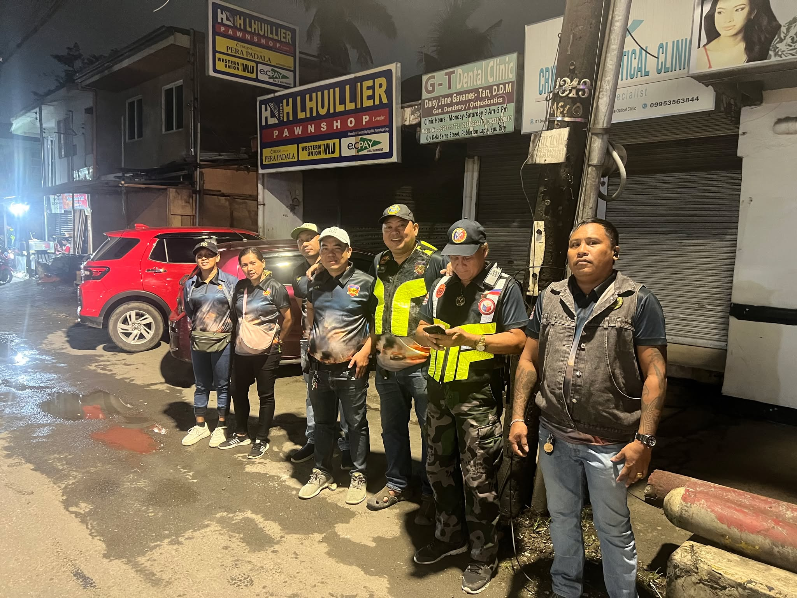
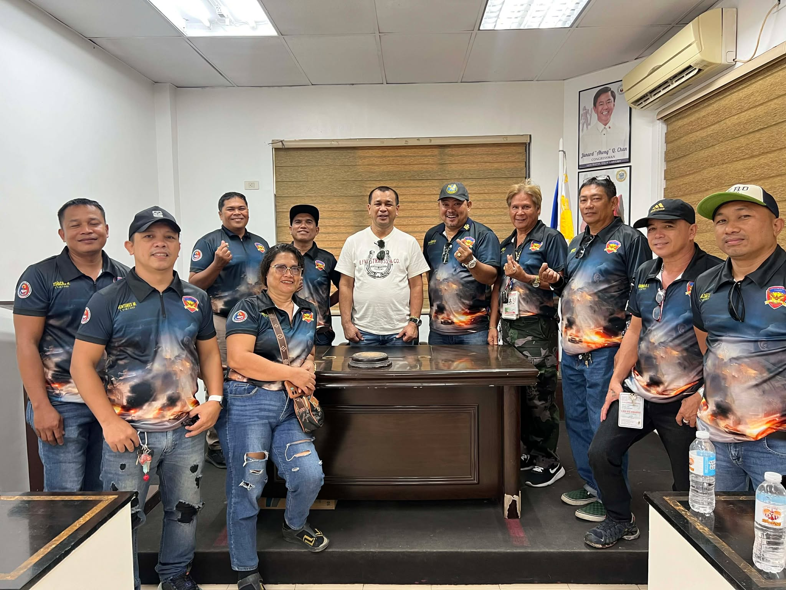
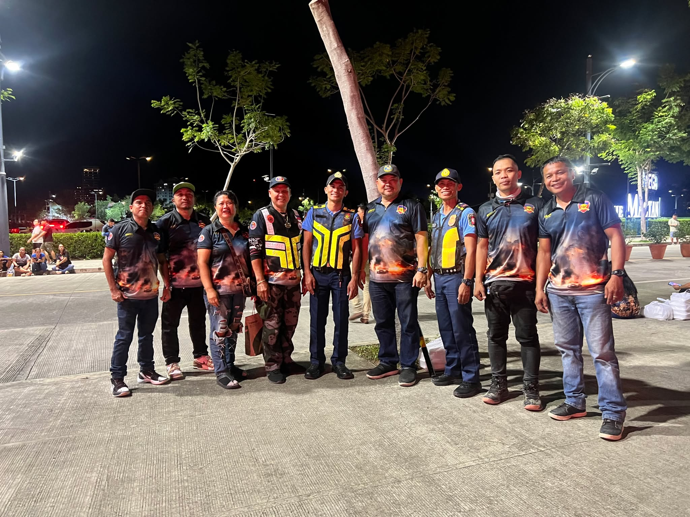
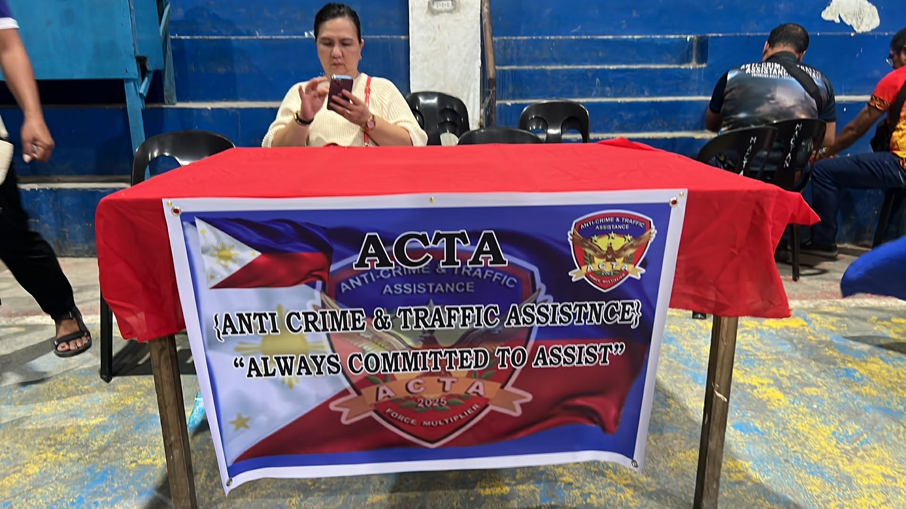
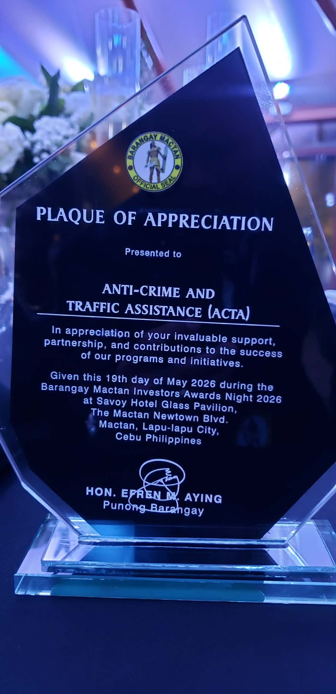

Traffic Assistance
Support traffic-management activities and help promote orderly movement in community areas.
COMMUNITY • SERVICE • PARTNERSHIP
Anti-Crime & Traffic Assistance (ACTA) is presented as a community-oriented force multiplier dedicated to assistance, public safety support and responsible service.
WHO WE ARE
Founded in 2025, ACTA — Anti-Crime & Traffic Assistance — is a community-based force multiplier program built around assisting communities, supporting traffic and public-safety activities, and working alongside police and local stakeholders.
This website uses the organization name, messaging and activities from ACTA's official materials. Additional administrative details such as hotline numbers, registration information and further chapter listings will be added as they are confirmed.
VISION
A safer, more secure and harmonious Philippines where citizens and law enforcement work together to prevent crime and promote public safety — building trust, mutual respect and collective responsibility for the well-being of all.
MISSION
To empower citizens to contribute to public safety by partnering with law enforcement agencies, promoting community engagement, and fostering a culture of vigilance and cooperation to prevent crime and address traffic issues.
LEADERSHIP
ACTA's founding leadership and first chartered chapter.
Regional Governor, The Fraternal Order of Eagles Philippines Eagles (TFOEPE) — CVR 11 · EY 26
WHAT WE DO
Built around practical assistance, community presence and coordination.
Support traffic-management activities and help promote orderly movement in community areas.
Provide visible community assistance and support efforts that contribute to safer public spaces.
Work with police, barangay and other stakeholders when participating in authorized community activities.
Participate in meetings, events, recognition activities and community initiatives.
IN THE FIELD
Selected moments from the supplied ACTA photo collection.





PARTNERSHIP
The supplied photographs show ACTA members participating in meetings and visits involving police personnel, public offices, barangay/community settings and other local events.
See the Leadership section above for ACTA's founding officer and Corporate Adviser from the Lapu-Lapu City Police Office.
PHOTO ARCHIVE
Tap any image to view it larger.
IDENTITY
For God — integrity, honesty, transparency and moral uprightness in every aspect of the organization.
For People — compassion, kindness, empathy and service to humanity.
For Country — patriotism, national pride and a commitment to the country's progress.
For Environment — stewardship, responsible use of resources and protection of the environment.
CONNECT WITH ACTA
For official contact information, membership requirements, chapter details and authorized activities, please provide the organization's confirmed details before publication.